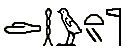
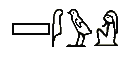
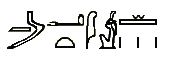
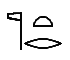

Épitaphe
Commentaire avec analyse de quelques shenous
Rédigé en septembre 2021
Mise à jour en novembre 2022
Quelques shenous à ajouter
Temps de lecture : 33 minutes
- Connaissance
- Des sciences et des alchimistes
- Des hiéroglyphes et des shenous
- Kemet : expertise opérationnelle dans la production d'oeuvres de survie
- Osiris : journalisme-prophétique relatant des évènements phénoménaux
- Isis : matrice des kémites
- Horus : grand oeuvre des kémites
- Apophis : initiation de l'onction qui sépare les eaux et domine les pulsions
- Imhotep : construction-transmission de l'alliance à la loi en vigueur
- Des corps et des mystères
- Des êtres vivants et des cellules
- Des hommes et des femmes (pour version 2)
- Des arts et des métiers (pour version 2)
- Ignorance
- Références
Connaissance
Des sciences et des alchimistes
Civilisation humaine
On dit que les égyptiens s'appelaient Kémites, et le pays Kémet, pour désigner le pays noir, ce qui n'a rien à voir avec le domaine planétaire désigné par le mot hébreu Mitsraïm dans la Torah et qui est le monde conceptuel de l'esprit des gens parfois bons mais surtout méchants qui tiennent en esclavage les ignorants qui sont à divers niveaux victimes et parfois participants involontaires comme volontaires.
En fait Kêmi signifie chimie comme dans al-chimiste désignant plus simplement un ou une polymathe.
Al-Kémite est celle et celui qui a acquis une connaissance et une maîtrise suffisante des sciences fondamentales que sont les mathématiques, l'arithmétique, la géométrie, la logique, la physique, la chimie, l'astronomie, la biologie, l'émotionalisme, le mentalisme, la linguistique, la programmation, la musique, la justice, etc.
Lois en vigueur
C'est-à-dire en bref : la kabalah ou étude des lois de l'univers et de la vie qui amène la compréhension ; la médecine, la psychologie, la sociologie, les réseaux, la politique, la cryptologie, l'électronique, la stratégie, l'agronomie, etc. étant des sciences annexes tout aussi importantes mais découlant des matières principales qui se mêlent avec les technologies applicatives et temporelles.
Quand à la philosophie, je n'y ai jamais rien compris, et encore aujourd'hui, malgré quelques bribes de sociologie et de théorie des réseaux, je trouve cette chose complètement absurde, puisque discuter de savoir si quelque chose de mal peut être bien, ou inversement, voire déblatérer sur ce qui est le plus grand bien pour un groupe au détriment d'un autre, est non seulement stupide, je trouve, mais dangereux et pervers, car c'est fabriquer des justifications aux crimes afin de les planifier ; en tout cas c'est ce que font les méchants au sein des groupes de pensée indépendamment de toute idéologie bonne ou mauvaise.
Des hiéroglyphes et des shenous
Un shenou ou cartouche hiéroglyphique possède des signes pour former un logogramme qui peut se lire soit vers la droite pour décrire un procédé ou une fonction selon le mode théorique du phénomène, soit vers la gauche pour une mise en pratique ou la réalisation de l'évènement.
Le mot grec hieroglyphos désigne à l'origine une "écriture sainte" et plus précisément la notion de "gravure sacrée" pour finalement désigner par simplification les "caractères" eux-mêmes. Cette écriture relève du domaine des scribes et des prêtres. Zahi Hawass indique dans le documentaire "Mille et une Egypte - L'écriture" que le hiératique est une simplification des hiéroglyphe utilisé par l'administration, lui-même simplifié en démotique destiné à l'usage de tout le peuple dans la vie de tous les jours, et que la connaissance de ces niveaux de langage déterminait l'évolution au sein des classes sociales.
La norme officielle est de lire selon le sens du regard des êtres lorsque présents, ou sinon selon le sens imposé par le traducteur égyptologue. Mais à quelques exceptions près, la méthode d'étude proposé ici permet de décoder les shenous dans un sens en tant que concept phénoménal ou dans l'autre en tant que résultat évènementiel. On comprendra le fondement de cette proposition en considérant que le cerveau gauche gère le passé et la logique pour construire, tandis que le droit gère le futur et les intuitions de ce qui est devenu : ainsi aller vers la droite est l'idée, tandis qu'aller vers la gauche est la concrétisation.
Les analyses suivantes suivent principalement la nomenclature Gardiner adaptée à la lumière des enseignements de la Torah tels qu'exposés dans le livre Le problème religieux selon une méthodologie similaire à celle présentée dans le livret L'alphabet hébreu.
Kemet : expertise opérationnelle dans la production d'oeuvres de survie
- Une route montagne avec des étapes ou échelons pour symboliser l'élévation par l'étude afin d'atteindre le plateau de l'expertise (et non pas une écaille de crocodile selon le sens commun).
- Un dôme pour la vie elle-même qui est croissance et sénescence grâce à l'eau pure qui mesure le centimètre de manière stable, universelle, éternelle et absolue lorsqu'une goutte tombe d'un doigt sur une surface de verre lisse via cette force élémentaire qu'est la gravitation.
- (Parfois) Une chouette pour la vision dans le noir afin de passer de l'incompétence inconsciente à la compétence consciente.
- Une croisée des chemins ou plutôt une croix des vents 3D dans ce volume fondamental du ℼ qu'est la sphère projetée sur une surface plane 2D et qui résume toute l'initiation sacrée au sujet du rien, du tout, de l'unité, de l'infini et du facteur imaginaire complexe (cf. croix copte et des templiers) ; Horapollen indique que c'est un pain sacré, symbole d'une société organisée autour de l'artisanat, et représentant par conséquent le pays des citoyens, c'est-à-dire au plus haut niveau, la civilisation humaine, et selon Georges Lahy, Frédéric Portal le rapproche du pain azyme qui est ce pain sacré.
Osiris : journalisme-prophétique relatant des évènements phénoménaux
- L'oeil qui voit tout selon une vue d'ensemble.
- Le scribe initié qui relate des choses et des lois ainsi que des bonnes et des mauvaises actions ; et lorsqu'on décrit des évènements invisible aux yeux et aux coeurs ordinaires on parle de prophète tandis que sera "roi" et "reine" qui les causera grâce à l'instanciation de phénomènes conceptuels.
- L'arbre sacré Ished ou siège est l'escalier à la fois de évolution de l'âme individuelle de sa conception à sa mort, et de espèce humaine entre les grands cataclysmes, par l'éducation :
○ Le premier pallier de enfance étant facile et court,
○ Ensuite celui de la vie adulte qui est abrupte et pénible.
○ Et une fois le temps de la sagesse il reste quelques efforts à fournir pour le peu de temps encore à vivre avant l'arrêt prédéterminé du mouvement des gènes et des cellules, la mort, puis plus rien, sinon un possible clonage ou réactivation de l'unité de conscience voire corporelle, rarement totale en raison du brassage génétique, dans la descendance.
Isis : matrice des kémites
- La scribe initiée qui relate des choses et des lois ainsi que des bonnes et des mauvaises actions ; et lorsqu'on décrit des évènements invisible aux yeux et aux coeurs ordinaires on parle de prophète tandis que sera "roi" et "reine" qui les causera grâce à l'instanciation de phénomènes conceptuels.
- Le dôme de la goutte d'eau citée précédemment qui synthétise la loi et la mesure.
- Un oeuf germe du futur, protégeant ce qui est caché, fondement de l'évolution.
- L'arbre Ished cité précédemment ; si l'essence du kémite est de construire extérieurement ce qui sera dévoilé, l'aspiration de la kémite est de le façonner.
Horus : grand oeuvre des kémites
- Soit un faucon pour représenter le pouvoir de la parole qui tue autant le bien, chose à apprendre à ne pas faire, que le mal, chose à faire quelles que soient les circonstances non pour tuer des êtres mais les mauvais comportements.
- Soit une face, tête-cerveau, qui parle avec la bouche pour changer les destinées qui s'entrelacent dans la vie de tous les jours au fil des interactions en bien via les bons, ou en mal via les méchants, ou n'importe comment via les ignorants, le tout étant un mélange de tout cela selon les familles, les groupes et les peuples.
Apophis : initiation de l'onction qui sépare les eaux et domine les pulsions
- Deux supports ou tabourets formant les yeux du livre de la double hélice de l'ADN révélé comme étant le véritable chose qui observe à travers les sens grâce aux cellules.
- Un serpent, ce qui rampe, se tortille et voyage, soit les ARN de toutes classes.
- Le bâton de Moshéh prodigué par YHVH qui par la perception intérieure contrôle la "volonté" mécanique de l'ADN ⇒ ARN ⇒ protéines ⇒ cellules ⇒ organes ⇒ corps ⇒ groupes ⇒ peuples...
Imhotep : construction-transmission de l'alliance à la loi en vigueur
- L'équilibre de la tête ("le pain sur le tapis" ou offrande) : enseignement de l'alliance de la Torah par la circoncision de la chair pour les nouveaux nés et dans tous les cas du coeur pour les étrangers, par le peuple qui suivent les lois de Dieu, ou par Dieu si la chair a été faite et éventuellement par le peuple si cela est nécessaire en cas de mauvaise tournure,
- Le carré : grâce à la science la plus sacrée du π des axes,
- La bulle d'eau : et à la connaissance des mesures de la géométrie et des forces de l'univers telles que la gravitation,
- La chouette : qui dissipe l'ignorance,
- Le roseau qui marche : au sujet de l'application des écrits et des lois.
La lecture de gauche à droite selon le sens académique officiel indique également que l'étude de la loi en vigueur dans le pays et dans les cieux dissipe l'ignorance grâce à la mesure des dimensions de la circoncision.
Des corps et des mystères
Anubis : passage de l'ignorance à la connaissance
- Homme à tête de chacal : à la fois la ruse et l'astuce issue de l'intelligence utilisée en sorcellerie généralement malveillante, et la vérité des enseignements corrects et adaptés qui sont bons témoignages et instructions bénéfiques.
- Poussin : nouveau né, nouveau prêtre, nouvel enfant d'Israël empêtré par le passé composé des crimes des méchants, des erreurs de tout le monde et de ses fautes.
- Vagues d'eau : se dit des choses qui se répandent et se propagent comme les faits juridiques et la connaissance, mais aussi la calomnie.
- Carré : au quatre coins du monde, de partout, en tout lieux, dans tous les domaines, dans toutes les maisons.
- Roseau ou vent : les règles de la loi en vigueur et de la science.
Thot : esprit des scribes-poètes ou odins de l'effervescence
- Main qui donne : offrande et transmission ainsi que soin et réparation.
- Tresse de lin : entrelacement des destinées aidants-aidés et effervescence engendrée par l'étude et la ferveur ; Horapollen dit que cela représente des lacs ou des filets, l'air et le souffle, ainsi que l'amour.
- Poussin : nouveau né, nouveau prêtre, nouvel enfant d'Israël empêtré par le passé composé des crimes des méchants, des erreurs de tout le monde et de ses fautes.
- Bulle d'eau : mesure des lois sur les phénomènes et les évènements.
- Double trait de pluie : action des lois, justice incluse ; les actions bonnes comme mauvaises du passé retombent sur le futur.
- Drapeau : ralliement à la science sacrée et donc à la loi en vigueur sur terre dans le pays et dans les cieux de l'activité mentale, dont le seul est unique but est l'éducation et la protection de la santé et des biens de tout le monde sans nuire même aux méchants, et tout le reste, les pactes et décrets, les réglementations et procédures, n'a pour que cela.
Quoi que le poussin soit tourné vers la gauche ce shenou a été expliqué vers la droite, mais la lecture vers la gauche donne le même concept sous un autre angle : le ralliement à la loi se fait par la connaissance des lois et des mesures selon les actions de l'étudiant grâce à la destinée du don de cette loi.

Khéops : horizon de la pensée consciente qui analyse et déduit
- Poussin : nouveau né, nouveau prêtre, nouvel enfant d'Israël empêtré par le passé composé des crimes des méchants, des erreurs de tout le monde et de ses fautes.
- Tamis ou boule de corde : la somme des connaissance à acquérir et qu'il suffit de dérouler tout au long de l'étude grâce aux enseignements écrits et oraux, en faisant attention à laisser de côté les fadaises et les mauvais préceptes pour ne garder que les choses bienveillantes et bénéfiques pour la prospérité de tous au delà des intérêts personnels sans nuire à autrui ; ce qui inclus les témoignages en affliction par les victimes de crimes.
- Vipère à corne, également 3ème personne singulier masculin "Lui, l'étudiant" : petites, vivent dans un semi-désert et se cache dans les sables du sans nombre, venimeuse à vomir ; représente le nouveau poussin ignorant, innocent et victime, devenu nouveau sachant et témoignant, qui répand la frayeur des faits et des preuves parmi les méchants pour qui il est leur "diable" déplaçant l'enfer qu'ils avaient injustement et illégalement placé sur lui.
Khéphren : grandeur du coeur de l'âme en vie et libérée du mal
- La vipère à corne cité précédemment.
- Un soleil levant ou aube, début d'une nouvelle phase suite à l'action mentale du Khéops en soi autour de soi ; Frédéric Portal y voir une paupière, symbole de l'observation, et donc du discernement, ainsi que du respect des célébrations religieuses.
- Un avant-bras avec la paume vers le haut pour recevoir sa propre et légitime destinée qui avait été dans les grandes lignes détournée et volée par les méchants.
- Un soleil plein pour la chaleur au sein du coeur du cerveau connecté au coeur organique qui enclenche rétroactivement jusqu'à l'effervescence les phénomènes étudiées en médecine et en neurosciences, et qui concernent le sentiment de joie et d'affection que l'on nomme gratitude et enthousiasme, ou même amour, au-delà de l'apaisement de l'affliction.
Mykérynos : effort du corps pour la survie et l'évolution
- Le soleil précédemment cité ; en effet, la disposition même des pyramides et des éléments constituant ces trois shenous implique cette suite logique synthétisant le processus de la sortie de Mitsraïm et de la sortie au jour par l'instruction au sujet des trois dan-tiens tête-tronc-abdomen ou cerveau-coeur-sexe ou pensée-émotion-effort.
- Un plateau de jeu dit-on, ainsi que demeure i.e. domaine, ou plutôt un bac de pousses, car le nouveau savoir fonctionne comme les graines qui éclosent et se développent, en bien ou en mal, selon leurs natures, selon le sol, selon la nourriture, selon l'attention qu'on y donne et selon la manière dont on s'en occupe.
- Des vagues d'eau pour indiquer que la connaissance de répand inlassablement et qu'il est aussi facile que difficile de la stopper et de la museler.
- Des bras et des mains en prière dit-on, ou plutôt qui saisissent quelque chose, qui est l'enseignement.
- Trois unité de comptage ou trois groupes de mains selon les inscriptions, ce qui revient au même tout en étant complémentaire et se réfère au Shema Israël qui résume en six mots toute la science sacrée du corps, de l'âme et de l'esprit qui sont à la fois aussi unique que l'ADN qui les génère, et unifiés dans le fonctionnement symbiotique de toutes les cellules indigènes et étrangères de l'entité formant la personne humaine mâle ou femelle.
Des êtres vivants et des cellules
Noun : océan primordial matrice de vie ou plasmes cellulaires
- Un être humain (homme mais pourrait être une femme) tout comme encore de nos jour beaucoup nomment Homme le genre humain en sous entendu mâle et femelle.
- Trois séries de vagues pour désigner le liquide du noyau cellulaire ou nucléoplasme, celui de la mitochondrie ou matrice mitochondriale, et le reste de la cellule ou cytoplasme.
- Trois vases pour insister sur le fait que ces liquides sont bien séparés par une membrane spécifique.
- La voûte des cieux pour la membrane plasmique où se trouvent les protéines-astres (cf la sous-section Béréshit de la section Le pouvoir de Dieu du chapitre La Kabalah de Pessa'h du livre Le problème religieux).
Atoum : ADN source de la vie
- Un être humain pour qualifier le sujet.
- Une chouette pour désigner ce qui est invisible.
- Une bulle d'eau représentant les lois de l'univers et de la vie qui dirigent ce qui suit.
- Un traîneau ou une luge, mais ça ressemble remarquablement à une représentation de bandes d'ADN avec les filaments, même si nos ancêtres ne sont pas censés avoir de microscopes électroniques.
Rê : ARN impulsion de la vie
Variante 1
- Un être humain pour qualifier le sujet.
- Un soleil et une unité ou rayon pour désigner un fragment.
Variante 2
- Un homme à tête de faucon, la parole ou Vav, portant sur la tête un disque solaire, la lumière de l'énergie ou Youd, tenant une Ankh qui est le plus simple dessin d'un bonhomme réalisé par un enfant : l'énergie fabrique le corps grâce à la parole de l'ADN.
- Un soleil et une unité ou rayon : les ARN sont des fragments d'ADN.
- Une bouche : la parole exprimée deviennent protéines.
- Un avant-bras avec la paume vers le haut pour la destinée : le corps et son fonctionnement grâce aux ARN qui sont les paroles de l'ADN.
Aton : perpétuel mouvement de la vie des photons atomiques
- Une bulle d'eau pour la source des choses : les lois-vecteurs organisatrices et directrices, immatérielles, non-localisables et intemporelles.
- Un disque solaire pour le coeur des choses : l'énergie des atomes.
- Un roseau pour ce qui engendre les choses : le verbe du code génétique.
- Une vague d'eau pour la nature des choses : la vibration du mouvement.
Des hommes et des femmes (pour version 2)
Anoukis : pôle récepteur
Apis : pôle émetteur
Shou : père

Tefnout : mère
Nout : foyer
- La bulle d'eau pour les lois de l'univers et de la vie qui dirigent tous les mécanismes et font que les phénomènes peuvent exister dans l'espace-énergie grâce au mouvement, concernant l'humain, du code génétique.
- Vase pour la notion de conteneur afin de contenir les eaux du potentiel et de les séparer comme lors de la sortie de Mitsraïm et de l'acte qui sublime le futur en vertu de la mesure de ce qui est bon et adapté sans nuire via une utilisation correcte des lois et des impulsions de la pensée à travers la matière selon la juste sensation.
- Voûte pour la création du futur ou table des combinaisons possibles selon la fusion aléatoire orientée par le savoir avec précaution, douceur, tendesse et bienveillance.
Bastet : pudeur
Geb : fruit
Khépri : création
Des arts et des métiers (pour version 2)
Maât : équilibre, paix, justice et compassion

Ptah : artisanat et architecture
Hathor : musique et joie
Ignorance
Des intentions et des actions
Isfet : utilisation malveillante des lois pour saccager et porter préjudice
- Un moineau : parleur et mangeur de graines opportuniste profiteur et grégaire.
- Une vipère à corne au dessus d'une demi-bulle : désigne ceux qui au lieu de se soumettre aux lois en vigueur se positionnent au-dessus en tant que non-soumis, étant donc de fait des criminels, abusant du pouvoir et de la confiance, usant de corruption et de tous les moyens possibles et imaginables, à commencer par le mensonge et le vol d'objets, d'argent, de destins et de vies.
- Un linge plié ou plutôt une crosse, ou sceptre Héqa, accolé à un roseau de papyrus : les méchants et les dirigeants qui n'aiment pas les humains et la bonté, et qui ont ni empathie ni compassion, tournent ainsi le dos à la loi et au bien-être d'autrui, n'ayant que faire des dégâts qu'ils causent, du nombre de victimes, des souffrances, des pertes, et des morts, ni même de la ruine de familles, de groupes, de pays et de l'espèce.
- Avec un verrou placé sur le serpent, à la place du linge, cela indique que les méchants subissent la pression de leurs désirs et convoitises, qui ainsi les contrôlent totalement, annihilant leur propre volonté, et que c'est cela qui les poussent à commander avec mépris aux écrits de la loi au lieu de la suivre avec gratitude et bienveillance.
Sekhmet : utilisation bienveillante des lois pour éduquer défendre réparer
Désignant selon Wikipédia "la puissante", "celle devant qui le mal tremble", "la colère de Rê" ou "la maîtresse des maladies".
- Femme assise ou chanteuse pour la scribe initiée qui relate des choses et des lois ainsi que des bonnes et des mauvaises actions, pour éduquer ses enfants et ses élèves ainsi que toute personne.
- Tamis ou boule de corde pour la somme des connaissance à acquérir.
- Dôme de la vie pour la mesure stable, universelle, éternelle et absolue des lois.
- Sceptre du pouvoir ou contrôle et gestion des choses pour la bonne manière.
- Cobra pour la capacité à combattre l'ignorance et le mal avec les lois (l'abstrait du phénomène) et les mesures (le concret de l'évènement) ; voir ci-après au sujet du mot Neter.
- Oeuf pour le germe évolutif du futur potentiel résultant de la bienveillance prodiguée envers les ignorants et les faibles pour les faire devenir instruits et forts.
- Chouette pour la vision dans le noir afin de faire passer de l'incompétence inconsciente à la compétence consciente.
Des humains et des mots
L'art des scribes
Pour les shenous étudiés ici, il a été choisit la représentation la plus populaire selon les quelques sources consultées, voire deux ou plus qui semblaient les plus pertinentes.
Cette variance de design, généralement attribuée à un même nom et habituellement assimilé à un nom propre, soit de roi ou de reine soit de dieu ou de déesse, ou autre, malheureusement par erreur ou par tromperie, provient du fait qu'en réalité nous avons affaire à une nomenclature de termes comme en programmation, mots-clés et fonctions ou procédures, utilisés pour établir des traités de science et non de contes historiques ou mythologiques comme on le pense ou fait penser.
Ainsi chaque variation est réellement une différence dans l'agencement des instructions pour former des bouts de code au sein des algorithmes des programmes de la science sacrée.
Le shenou du shenou lui-même, le mystère des mystères des sribes, traduit par encercler, peut se comprendre ainsi :
- Un anneau de l'esprit ou bague divine pour protéger des risques de l'étude et de la connaissance tel un enclos avec des barrières, symbole de l'alliance à la loi ; Frédéric Portal y voir un sceau qui ferme et clôture quelque chose, ce qui confirme.
- Un poussin qui n'est autre que l'étudiant lui-même.
- Un bol d'encre pour l'écriture des textes avec lesquels et sur lesquels on travaille, ou de nos jours également un ordinateur ou encore parfois une machine à écrire.
- Une corde nouée, relâchement de l'anneau au fur et à mesure de l'apprentissage et de la prise de responsabilités.
- Des vagues d'eau qui sont la conséquence de l'éducation puisque l'étudiant initialement inactif ou non opérant deviendra actif ou opérant, et tel est le but de toute étude, que ce soit avec les notions de vie de base à l'école commune, les formations pour un métier, et les sciences de quelque nature que ce soit.
Ainsi le rôle d'un shenou est d'instruire le mental de l'étudiant dans les meilleures conditions contrôlées de libertés selon des règles, des limites et des objectifs, afin de le faire passer de l'ignorance à la connaissance dans le but qu'il ne soit plus incompétent, mais compétent, dans un domaine donné.
Pour le terme scribe lui-même qui publie des oeuvres dans le grand fleuve du monde, nous avons :
- Un homme, sinon on aura une femme pour la scribe, qui désigne ici en l'occurrence le moi-je du scribe : "moi, je suis celui qui (écrit et peint)".
- Kit de l'écrivain : une boite avec un trou blanc et un trou noir pour représenter les nuances dont dispose la palette de l'artiste, non seulement les variations de couleurs mais également les harmoniques des expressions et des sujets exposés, relié à un pot d'encre d'où sort un stylo en roseau ; signifiant que l'encre ainsi mise en forme est l'expression, la face visible, de la palette elle-même, sa fleur, pour donner des fruits via son étude et utilisation, qui seront bons ou mauvais selon divers paramètres.
Terminologie spirituelle
Ces mots égyptiens et les autres du même genre, y compris ceux de la terminologie utilisée dans les textes dit sacrés et écrits en hébreu, sanskrit, mandarin, grec, futhark, arabe, cunéiforme, etc. ne sont pas des "dieux" comme on fait le croire avec des mythes imaginaires et des sornettes historiques, ni des qualificatifs donnés à des personnes décédées comme il est parfois suggéré, ce qui est tout de même moins pire et plus proche de la vérité en tant que modèle concret ou exemple archétypal optimal.
Ces termes généralement compris comme des nom propres de personnages, et qui en réalité ne le sont pas plus que le nom d'une fonction informatique, désignent des niveaux d'évolution de la conscience du ou de la Brahmane qu'il est possible d'atteindre en théorie au cours de la vie.
En fait ce sont des titres et des sous-titres de ce que les lignes et colonnes de hiéroglyphes racontent, les fresques et les dessins mettant allégoriquement et paraboliquement en scène les traités de science, lorsque les textes ne concernent pas les affaires ou des choses de la vie de tous les jours.
Parce que finalement toute la science dite sacrée ou spirituelle ne concerne en réalité et au final comme à l'origine que le corps et ses parties, du plus interne des cellules et de l'ADN, au plus externe des actions et des émissions, en passant par le cerveau, les nerfs, les vaisseaux, les organes, le système locomoteur, les sens, etc. et uniquement cela.
Ainsi lorsque la Torah nous demande de ne pas écouter et de ne pas suivre des dieux, c'est-à-dire des choses supposées être source et cause des phénomènes et des évènements, qui sont étrangers à la Doctrine de YHVH de Elohim, il est question de ne pas apporter croyance et foi en des mythologies et des systèmes de pensées faux et mensongers, qui sont inéluctablement trompeurs et malveillants.
Pour cela, pour l'amour du bien et le rejet du mal, il nous faut savoir la vérité pour voir, au-delà des duperies, la réalité des choses, des mots, des idées et des concepts : les lois de l'univers et de la vie qui dans le domaine humain doivent servir l'éducation et la protection de la santé et des biens des personnes sans nuire même aux criminels et rien d'autre qui serait nuisible quelles que soient les technologies, les cultures et les politiques administratives mises en place.
Engendrement de la paix
Cette assertion est schématisée par le shenou Seth qui n'est pas un "dieu" du "chaos", mais qui résume toute la science sacrée du "comment on fait les bébés avec le bidule qu'après y faut s'en occuper, et des couches et de tout le reste, toute sa vie" soit dit plus simplement, le père qui a une filiation :
- Une bulle d'eau qui synthétise toute la science sacrée éternelle et toutes les sciences des mathématiques et de la géométrie, ainsi que toutes les technologies qui en sont issues.
- Une queue de taureau ; sans commentaire.
- Du linge, dont on aura besoin pour après l'intervention du taureau...
Une autre lecture en considérant la crosse du berger qui guide serait : [la connaissance et l'amour de] la loi et la mesure donnent la force et le pouvoir de manier et de conduire [vers le bien, la liberté, la justice, et la prospérité].
Ainsi le mal, en dehors des véritables accidents et catastrophes naturelles, ou d'une opération chirurgicale contrôlée pour soulager ou sauver la vie sans inclure de nuisance inutile et malveillante, est toujours l'effet de causes criminelles. Et là se trouve le coeur du débat nommé philosophie qui est : "le mal est-il acceptable et à quoi sert le bien ?".
Quant à tous ceux et celles qui racontent des choses au sujet de vies avant et après la mort autrement qu'en parlant de transmission voire de récurrence génétique, ainsi que de fantômes et d'êtres surnaturels autrement qu'en science mise en fiction et autres contes ou romans imaginaires, ce ne sont que des menteurs trompeurs ou trompés, voire des escrocs et des criminels s'ils le font en toute connaissance.
Ainsi Osiris est celui qui a franchit la ligne d'arrivée du Livre pour sortir au jour qui décrit le processus nommé initiation à la vie et non à la mort, pour action publique envers l'humanité, pour la survie des vivants via la compassion au détriment de la mort et de la haine : c'est un Abraham, un David, un Jésus... idem pour une femelle. Alors nous pouvons dire plus simplement qu'un Kémite est un Adam ou une 'Havav, un fils ou une fille d'Israël.
Quant à Apophis ce n'est pas non plus le dieu des "forces du mal", expression qui désigne les criminels, car ce mot qualifie au contraire le coeur même de tout le processus de la sortie de Mitsraïm via la séparation des eaux et les dix étapes de l'initiation et de la libération d'un enfant d'Israël vers le bien et les vivants afin de fuir le mal et ceux qui travaillent pour la souffrance et la mort prématurée pour en tirer un bénéfice au préjudice des victimes.
Et concernant Imhotep "celui qui apporte la paix" dit le "père des pyramides et de la médecine", ainsi est l'origine du don fait aux maçons-bâtisseurs par les clercs instructeurs, sachant que chacun de nous est à la fois un enseignant et un artisan de sa propre vie comme de celle des autres à travers les interactions.
Perception du domaine
Il est parfois dit que la Torah a copié les mythes de l'Égypte et de la Mésopotamie ou encore par exemple de l'Inde. En vérité, c'est la Torah écrite en langue génétique qui a été dupliquée dans diverses langues humaines, puis quels que soient les textes, ils ont tous été falsifiés par les méchants en étant mal traduits et mal interprétés avec le mauvais oeil du mauvais coeur du mauvais mental afin de générer de mauvaises actions et de duper les ignorants qui propagent eux aussi l'aberration administrative originelle...
Ainsi les réponses aux questions existentielles soulevées depuis la nuit des temps par l'esprit humain se trouvent dans le mystère hébraïque, et pas seulement dans ceux des égyptiens, des grecs, des latins, des mayas, des hindous, des atlantes, des gondwanais, des aliens, ou de quoi que ce soit d'autre y compris de surnaturel voire transdimensionnel, car tout est enseigné par la Torah elle-même et dans les écoles des savoirs, des sciences, des arts et des métiers de la Nation des Nations.
Il n'y a en effet entre les atomes des corps et les photons des champs que les électrons de l'électricité, et rien d'autre sinon du détail ; et ce, depuis toujours, en ce moment, et pour toujours, grâce aux inséparables et intrinsèquement liées lois-vecteurs des forces de l'univers et de la vie étudiées par les sciences et qui n'ont ni localisation, ni origine, ni destination, ni volonté propre, et ni existence propre, car en chaque point et à chaque instant créant, faisant évoluer et détruisant les choses visibles et invisibles du monde mis en mouvement spectral par la vibration d'un code ordonnancé par une pure mécanique interactionnelle basée sur les nombres équationnels.
Nebkheperourê généralement traduit par "origine des transformations de Rê" ou "manifestations divines de Rê" signifie :
- Cercle solaire : le savoir
- Scarabée : transforme
- Trois traits : le corps-âme-esprit i.e. pensées-émotions-actions
- Panier : pour tout maîtriser, créer, diriger (dans sa vie et celle des autres, en bien ou en mal).
Le mot Neter, improprement traduit et interprété par la notion de divinité au sens de dieu ou déesse surnaturelle et paranormale en tant qu'idole, est en réalité le titre du plus haut degré dans l'étude relative aux lois gouvernant l'univers et le monde humain, et que l'on nomme aussi parfois prince ou princesse, voire roi ou reine, ou plus simplement brillant, oint, aryen, clerc, élu, etc.
Le shenou indique en effet que l'on est dans une certaine mesure arrivé à l'unité de la connaissance du tout dans son ensemble fractal en terme de polymathie, ce qui correspond au plateau de Kémet.
Ainsi les divers shenous généralement traduits par dieu ou déesse, et qui ont engendré la fameuse mythologie égyptienne, et donc les contes et légendes à ce sujet, représentent tout simplement les grades d'avancement sur ce plateau opérationnel.
Par exemple, les shenous ci-après désignent respectivement, selon ce qui précède le drapeau qui est le but atteint par l'enseignement et l'étude :
- Barre verticale : fin de l'enseignement, l'unité-unicité plurielle de l'unique, le Shéma Israël, a été transmise, équivalent d'une sorte de fin des cours.
- Être humain : titre de nouveau prêtre ou de nouvelle prêtresse, équivalent du diplôme, l'initié étant connu et reconnu comme tel ou telle, du fait de ses oeuvres.
- Bulle avec bouche : capacité à parler de la loi et de la mesure qui ainsi s'expriment à travers la personne selon sa sensibilité et ses aptitudes, le propos impliquant une haute responsabilité du fait de son influence.
- Cobra : capacité à combattre avec les lois (l'abstrait du phénomène) et les mesures (le concret de l'évènement), par la parole, en bien comme en mal ; la seule guerre légitime et légale étant contre l'ignorance et les mauvais comportements, sans nuire ni blesser ni tuer, et tel est le faire mourir le mal de la Torah mais pas les gens, en éliminant les systèmes de pensées défectueux, le but du vrai djihad, mot arabe qui signifie "faire un effort pour s'améliorer et aider autrui" et qui n'a absolument rien à voir avec le terrorisme et le crime, mais avec ce que l'article 10 du préambule de la constitution française nomme de [bonnes] conditions pour le développement des individus éduqués, libres, heureux, en bonne santé, en sécurité, et formés à un métier adapté - de part l'origine de sa racine verbale qui est le labeur et le travail pour la prospérité et la survie, ainsi que pour l'éducation et l'aide, y compris la justice non nuisible, ce mot ne peut en aucun cas avoir de sens négatif sinon pour les méchants et les menteurs, car il désigne en simplifié la lutte contre le mal, et user du mal contre quoi que ce soit est invalide car illégal, même contre les méchants.
- Faucon sur une bannière : la pouvoir de la parole est affilié à une communauté en tant que leader parmi les leaders.

Ainsi un pharaon ou une pharaonne se comprendra comme le plus haut chef désigné par le groupe, c'est-à-dire son représentant, son médiateur, son décideur et son juge ou président, peu importe le mot, en bref, celui ou celle chargé(e) de trancher entre les parties et d'orienter la marche et l'aspiration en plus de proposer des idées, plusieurs formant généralement un haut-comité avec parfois, ou pas, un poste de conciliateur principal élu pour ses qualités, ses forces, ses aptitudes, sa bonté ou sa méchanceté, voire pour ses pouvoirs :
- Une maison : domaine, clan, groupe, société, entreprise, communauté, pays...
- Un bâton : volonté, contrôle, direction, supervision, organisation, management...
Ce mot pharaon, ou roi, s'applique généralement au mâle, la femelle étant désigné par un autre mot, la différence étant pour marquer la distinction biologique, non pas en tant qu'importance ou supériorité-infériorité qui n'existe pas, mais en tant que nature biologique chromosomique.
En effet, le mot reine signifierait "celle qui voit Horus et Seth" c'est-à-dire celle qui sait tout de son mari et de son enfant, soit celle qui sait tout des hommes et de leurs petits, ou en d'autre termes, celle qui a déjà la Torah en elle lors de sa conception et de sa naissance et qui la révèle lors de la grossesse et de l'accouchement, alors que l'homme ne peut l'acquérir que par l'étude des lois et des sciences.
Ainsi Setibhor est composé de :
- Une bulle ou goutte d'eau pour la connaissance en tant que source de vie soit le gamète mâle qui est attiré par la matrice femelle.
- Un coeur ou un vase en tant que réceptable soit le gamète femelle qui reçoit la matrice mâle.
- L'escalier de l'évolution pour la formation du shalom bayit au sein du couple par la femme qui module et par l'homme qui modèle.
- Horus pour l'homme en tant que grand oeuvre interne de la femme pour le grand oeuvre externe de l'enseignement et des publication, ainsi que la descandance.
Ainsi en réalité désigner une femme de pharaonne n'a pas plus de sens que dire qu'une femme est un homme, ou inversement. Mais tous deux sont des humains et par abus de langage cela n'a finalement aucune importance si on sait de quoi on parle puisque les deux faces d'une pièce forment la pièce et s'y confondent.
{kind=link}
Ceci dit, par souci de méticulosité, il convient d'éviter d'engendrer et de perpétrer la confusion auprès de ceux et de celles qui ne savent pas afin de ne pas tromper.
Donc si le domaine d'un homme peut-être qualifié de Peraâ, le mot Ouret-Hékaou qualifie celui d'une femme :
- Cobra : Capacité
- Mains levées : pour enseigner
- Trois traits : au sujet du corps, de l'âme et de l'esprit
- Tresse : afin de forger la destinée
- Moineau : en nourrissant
- Bouche : grâce à la parole
- Bulle d'eau : et à la connaissance des lois et des mesures
Des nations et des graines
Messianisme universel
Ce qu'on nomme improprement messianisme, en inventant toute sortes de fadaises à ce sujet, est ce sentiment de rendre réel une Nation juste et bonne, honnête et équitable, qui traite bien ses citoyens bons comme mauvais, où les gens prospèrent en bonne santé et en paix, et où les seuls véritables ennemis sont l'ennui, les germes, les cancers, les intempéries et les traumatismes non intentionnels, sinon c'est du crime.
Une telle Nation n'existe actuellement pas dans le monde réel en raison de l'éternelle loi nommée démocratie ou "accord commun majoritaire du groupe et notamment de l'élite dirigeante qui impose ainsi les décisions et les manières à tout le monde", et aucun humain ne l'a plus vu depuis des éons, depuis probablement au moins plus de 10000 ans, quoi que des vestiges ont perduré au sein des premières grandes civilisations de notre ère actuelle, puis cela s'est effrité au fil des siècles et des millénaires, guerre de convoitise après guerre de haine.
Alors perdant de plus en plus cet esprit de compassion et d'empathie individuelle et collective, les civilisations durent de moins en moins longtemps pour être remplacées par de nouvelles portant l'espoir du renouveau qui ne reste pourtant qu'une utopie à cause d'un bug persistant au plus profond de la nouvelle administration, car héritée de la précédente : une incapacité à effectuer une application bénéfique et non maléfique des lois.
On retrouve cette notion de messianisme dans son sens correct et noble dans ce qui est nommé le festival de Sed :
- 𓎳 W4 : grande salle double vide ou cerveau de l'étudiant ignorant.
- 𓋴 S29 : crosse du berger qui guide, enseignant instructeur ou Moshéh
- 𓂧 D46 : main qui donne la Torah et soigne ou action du peuple.
- 𓈀 N18 : désert entre Mitsraïm et Israël ou le labeur et les dangers de l'étude.
- 𓉳 O23 : couple formé.
Espoir de survie
Une telle Nation ne peut en effet pas exister si on s'occupe mal des graines et qu'on les opprime, faisant que les deux-tiers tournent mal tandis que les bonnes périssent.
Jusqu'à ce jour où nous vivons la singularité technologique prodiguée par l'informatique et internet qui même malgré les grands mensonges permettent de dévoiler des vérités encore plus puissantes que les crimes eux-mêmes.
Ainsi la Torah, abordée avec bon oeil et bon coeur, sans mauvaises pensées, comme un livre global de lois scientifiques, se révèle être le manuel le plus complet de la plus haute survie pour l'individu, pour les groupes, pour les nations et pour l'espèce, et non pas un conte historique-mythologique farfelu et irrationnel au nom duquel, au contre lequel, on peut aller jusqu'à devenir fanatique et tuer alors que faire cela est interdit et punit de retranchement, car ce sont les méchants qu'il faut mettre en prison pour les réformer dans la mesure du possible, au lieu d'enfermer et de torturer des victimes avec des bourreaux, ou encore de les exterminer tels de vulgaires insectes.
Voici le shenou ayant été attribué à Israël par des égyptologues :
Origine de la finalité
Ainsi, une fois dévoilé tout cela au sujet de la science sacrée qui est la science de la vie elle-même qui n'est pas un jeu mais le domaine d'expression et d'action des lois de l'univers exposées relativement à l'humain dans la Torah, il est facile de comprendre le shenou complet de Horbehedety de cette manière qui résume le phénomène nommé initiation :
- Voûte des cieux, également membrane plasmique : Étendue des limites du domaine de la création.
- Panier de l'ensemble des causes : Lois de l'univers.
- Dôme de la vie : Lois de la vie.
- Bâton de l'impulsion des mécanismes : Responsabilité ou volonté relative au savoir.
- Drapeau du ralliement à la plus haute bienveillance résultant du savoir : Bon usage des pouvoirs humains.
- Main qui donne et transmet le savoir, les soins, l'aide et la justice : Instruction par l'étude et l'aide.
- Croix du PI ordonné et stable : Paix de la bienveillance.
- Dôme de la courbe de vie de la naissance à la mort : Engendrement.
- Défense d'éléphant ou dent, symbole de la peine de la tâche de l'étude, du témoignage et de l'instruction malgré l'affliction des crimes observés et/ou subits : Nouveau prêtre de la Torah.
Et le shenou Montou qui est l'action du kémiste ou kabaliste en formation au cours de son étude des choses du monde :
- Poussin ou nouveau prêtre de la Torah ou nouveau venu en Israël.
- Plateau de Kemet ou jardin de culture des personnes instruites sur les choses, soignées des blessures, aidées dans les difficultés et défendues contre le mal.
- Vagues d'eau ou dissémination de la Loi.
- Attache de corde ou plutôt pince à aliments pour tourner et retourner la nourriture des lettres... soit la Kabalah.
Et Ânkhefenkhonsou qui est un kabaliste devenu instructeur opérant sur le monde :
- Carex ou Ank (en vie, je suis) ou papyrus ou oeuvre au sens large : support de l'engendrement dans les cieux par le verbe et la connaissance.
⇒ Maître ou tout simplement enseignant, non pas pour tailler et torturer les disciples ou tout simplement élèves et enfants, mais les modeler afin qu'ils se modèlent eux-mêmes et elles-mêmes, selon leurs potentiels, aptitudes, impulsions et opportunités, afin de révéler leurs destinées qu'il ne faut pas détourner pour quelque intérêt que ce soit hormis éduquer, soigner, aider et protéger, pour eux et pour tout le monde, sans altérer la personnalité et le corps ainsi que les choix tout en corrigeant ce qui n'est pas adapté et orientant vers ce qui convient, en guidant sans forcer.
- Vagues d'eau ou dissémination de la Loi.
- Tamis ou boule de corde : connaissances et témoignages
- Vagues d'eau ou dissémination de la Loi.
⇒ Transmettre le savoir permet de former ceux qui transmettent, sinon c'est la mort de tout.
- Vagues d'eau ou dissémination de la Loi.
- Tamis ou boule de corde : connaissances et témoignages.
- Vipère à corne ou prêtre d'Israël parmi les serpents menteurs.
⇒ Cette transmission doit se faire de manière fluide, lente et avec précautions à l'aide de remparts de protection pour éviter les dérives le long du chemin de l'initiation.
- Croix de vie ou lanières des sandales : cerveau sur moelle épinière soutenue par le sang de l'artère du souffle-mouvement créant la réalité.
⇒ C'est le cerveau, le mental, qui soutient tout et cause tout dans le monde humain, le bien comme le mal ; les humains et aucun "dieu" ou "entité" de ce que les gens imaginent au sujet du divin et du surnaturel à cause des mensonges des méchants qui causent la confusion au sujet de l'esprit, du corps, de l'âme, et des lois du monde.

Dissémination du savoir
La question n'est pas de croire ou ne pas croire en telle ou telle traduction ou interprétation d'un texte de lois dites spirituelles, ni même de le comprendre ou pas, mais de toujours mettre en place et appliquer les bonnes lois du pays en vigueur que sont la constitution, le code pénal, le code civil, le code de santé, la déclaration des droits, etc. sans les duper et sans les travestir eux-aussi afin de justifier au nom du peuple comme au nom d'un dieu les malversations, les crimes, les atrocités et les meurtres qui résultent en vérité d'un comportement défectueux des organisations dirigeantes et non pas d'un droit ainsi soumis par la mauvaise utilisation des pouvoirs au lieu de le respecter parce qu'on aime les lois, la bonté, la justice et les humains.
Heddet ou Djedet ou Hatméhyt ou Hadit (premier poisson) : les cellules souches et germinales mâles et femelles
- Scribe initiée à la science sacrée éternelle via l'initiation.
- Dôme des lois et mesures de la vie humaine acquises par l'étude.
- Oeuf ou embryon germe évolutif du futur potentiel résultant de la pratique.
- Roseau du verbe mâle ou code génétique X-Y.
- Roseau du verbe femelle ou code génétique X-X.
- Tresse de la fusion des destinées selon les lois en vigueur.
- Fouet (V22) ou plutôt force de la langue (F20) qui parle non pour un et un mais un pour deux.
- Partie avant d'un lion ou sphinx qui est la force du coeur et le secret azuré de l'onction de l'ADN qui est la plus haute compassion bienveillante (cf la fin du chapitre Religion).
- Dôme de la nouvelle vie ou chair engendrée pour propager la survie de l'espèce selon ce qui est correct et adapté.
RaHerakhty (Horus de l'Horizon) : le fruit du couple mental, affectif et corporel
- Soleil sur montagne ou dans la vallée pour l'horizon des évènements soit le lever du soleil i.e. un nouveau jour voire une une nouvelle période de la vie tant individuelle que familiale et communautaire jusqu'à l'espèce elle-même et donc un nouvel éon, une nouvelle génération, une nouvelle lignée.
- Nombre deux ou dualité i.e. le couple homme-femme (toute autre combinaison ne relevant pas de la science sacrée, et contrairement à ce qu'on dit de la Bible à n'aide de fausses traductions, celles-ci, ou ce qu'en pensent les ignorants ou les hyper pudiques et même les pervers, ne sont pas interdites selon les règles prescrites pour protéger l'espèce tel qu'exposé dans le chapitre Religion).
- Dôme de la nouvelle vie ou chair engendrée pour propager la survie de l'espèce selon ce qui est correct et adapté.
- Faucon sur une bannière ou pouvoir de la parole affiliée à une communauté et à l'espèce toute entière sans distinction de quoi que ce soit en tant que guide parmi les guides.
- Un soleil levant ou aube, début d'une nouvelle phase.
- Unité de comptage pour le Shema Israël.
Akhethetep (le savoir est préservé) : les graines ont été plantées pour les générations futures
- Un homme, sinon on aura une femme pour la sribe, qui désigne ici en l'occurrence le moi-je du scribe : "moi, je suis celui qui (écrit et peint)",
- L'équilibre de la tête ("le pain sur le tapis" ou offrande) : l'enseignement de l'alliance de la Torah par la circoncision de la chair pour les nouveaux nés et dans tous les cas du coeur pour les étrangers, par le peuple qui suivent les lois de Dieu, ou par Dieu si la chair a été faite et éventuellement par le peuple si cela est nécessaire en cas de mauvaise tournure,
- Le carré : grâce à la science la plus sacrée du π des axes,
- La bulle d'eau : et à la connaissance des mesures de la géométrie et des forces de l'univers telles que la gravitation,
- Ibis chauve ou à crête pour le divin (Thot) i.e. la sagesse de la responsabilité des mystères de la survie et de l'évolution de l'espèce humaine : c'est la science du sacrée et des lois d'une société en paix et prospère,
- Dôme de la vie : propagation des lois pour la survie de l'espèce selon ce qui est correct et adapté.
Références
Hiéroglyphes
- Histoire du déchiffrement des hiéroglyphes
- Les symboles des Égyptiens comparés à ceux des hébreux
- Wikipédia : Écriture hiéroglyphique égyptienne
- Wikipédia : Grammaire d'égyptien hiéroglyphique
- Wikipédia : Egyptian numerals
- Wikipédia : Gardiner's sign list
- Wikipédia : List of Egyptian hieroglyphs
- Classification Gardiner des Hiéroglyphes
- The 1071 hieroglyphs appearance and sources
- The 1071 hieroglyphs functions and meanings
- PHRP : List of all the signs referenced in the database
- PHRP : A palaeography of polychrome hieroglyphs
- Projet Rosette
- Signes hiéroglyphiques PDF
- Dictionnaire Hieroglyphs.net
- The Google's Fabricius Workbench
- Egyptos.net
Documentaires
- Grande Pyramide K 2019 : hypothèse du coulage de béton sur place et de la bulle d'eau comme unité de mesure stable et absolue du centimètre.
○ Avis : crédible et logique mais quelques erreurs d'hypothèses sur la fin ; au-delà de ces conjectures, le sentiment exalté d'affection envers l'humanité est saisissant.
○ Remarque : au delà de la révélation sur l'eau de la gravité des surfaces et sur des technologie de maçonnerie, ce film a initié mon étude des hiéroglyphes.
○ Avertissement : ce film diffusé sur des chaînes télévisées de grande audience et sur internet a fait polémique, et je ne sais pas trop ce qu'on raconte au sujet de son producteur, c'est pourquoi je recommande l'esprit critique et scientifique au sujet de ses propos.
- La révélation des Pyramides : la science de ℼ et du φ ainsi que du mètre des architectes des routes, des ponts, des murs et des toits du monde.
○ Avis : très instructif mais ce qui concerne les extra-terrestres et autres choses de ce genre est de la pure science-fiction.
○ Remarque : ce film a initié ma compréhension des cercles du ℼ et de diverses choses mentionnées dans le livre Le problème religieux.
○ Avertissement : ce film diffusé sur des chaînes télévisées de grande audience et sur internet a fait polémique, et je ne sais pas trop ce qu'on raconte au sujet de son producteur, alors c'est sans préjuger de ses intentions et de mon ignorance que d'une manière générale je déconseille vivement l'investigation, à d'autres fin d'enquête de type journalistique et cartésienne ou de police voire d'auto-défense, de toute idéologie et de toute pratique ésotérique marginale et non scientifique, notamment dites du new-age et de la magie ou de la sorcellerie, et plus généralement ce qu'on nomme le domaine de la spiritualité et des énergies, tellement il y a de charlatans qui abusent de l'ignorance et de la confiance des gens, où l'on demanderait d'abandonner autre chose que les mauvais comportements et de croire des choses impossible à vérifier voire contredisant les preuves, et qui amènent malheureusement très souvent aux abords de groupes sectaires menteurs, qui au-delà du farfelu présenté au public et du détournement des faits et des lois effectué en coulisses, sont réellement dangereux pour les individus, pour les peuples, pour les nations et pour l'espèce humaine, car utilisant des savoirs et des technologies de manipulation relevant du crime en bandes organisées à des fins politiques dans le but d'accomplir des plans généralement malveillants ou de tout simplement nuire aux victimes pour s'amuser et gagner de l'argent, même si on ne les connaît pas ; dans le même état d'esprit, on se méfiera également de ceux qui combattent de tels groupes au nom de la dérision et d'un anti-complotisme, surtout lorsqu'on n'a pas de bonnes bases de logique et une certaine éducation scientifique ayant pour but de développer le discernement et l'objectivité, au risque de tomber dans la spirale infernale de la désinformation désinformative confusionnelle des mensonges sur les mensonges qui mentent, faisant ainsi encore plus s'éloigner des vérités fondamentales l'étudiant qui cherche des réponses à ses questions existentielles.
Plus d'informations
- Étude de la fractale alchimique Rosa Cosmica
- Le temple du couple hébreu
- Le dévoilement du peuple de la Torah
- Décodages de quelques versets sacrés
- Quelques versets pour une tournée
- Le zodiaque de l'astrophysique bioquantique
- Le Tarot du destin ordonné
- Épilogue